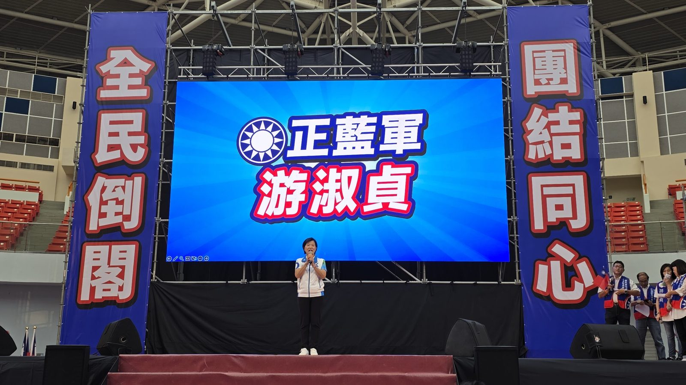

蔣萬安花蓮授旗力挺游淑貞 藍營小巨蛋造勢劍指五合一全壘打

可樂電子報小編/編輯
國民黨今（15）日下午於花蓮小巨蛋舉辦「全民倒閣、團結同心大會」，展現藍營中央與地方合體輔選氣勢，力挺花蓮縣長參選人游淑貞。台北市長蔣萬安親臨現場為游淑貞授旗，象徵國民黨正式拉抬花蓮縣長選戰聲勢。花蓮縣長徐榛蔚、立法院國民黨團總召傅崐萁，以及多位藍營立委齊聚站台，共同為游淑貞的選情加溫。

蔣萬安致詞時強調，花蓮縣長徐榛蔚執政八年奠定深厚基礎，相關建設與政績不容中斷，務必交棒給最了解基層、最具執行力的游淑貞。他肯定游淑貞長期深耕地方，從基層一路走來累積的實務經驗與執行力，期盼花蓮鄉親能讓這位「鐵人鄉長」升級為「鐵人縣長」，延續花蓮的發展動能。游淑貞則表示，自己出身基層，沒有家族政治背景與派系包袱，能投入公共服務是受花蓮鄉親栽培。

游淑貞進一步說明，過去在吉安鄉長任內，她推動了智慧新門牌、環保志工、社區營造、道路排水改善以及客家與部落文化建設等多項基層施政。她承諾若能承擔縣政，將以務實行動延續花蓮發展，致力推動全縣十三鄉鎮市的共榮願景。此次國民黨選在花蓮小巨蛋舉辦大型造勢，顯現藍營試圖透過中央、地方與立院戰力集結，鞏固基本盤並凝聚支持者向心力，為花蓮縣長選戰注入新動能。

花蓮警方為因應造勢活動人潮與車流，已提前規劃交通疏導與管制措施，確保周邊道路交通順暢。此次蔣萬安、徐榛蔚、傅崐萁與多位立委的聯合輔選，不僅拉抬游淑貞的選戰聲勢，也向外界釋出藍營團結作戰的明確訊號。隨著花蓮縣長選戰進入白熱化階段，游淑貞能否有效承接地方執政資源與藍營支持能量，將是後續選情的重要觀察指標。
▶ 延伸觀看
📺 相關報導影片：點此於 YouTube 觀看完整報導